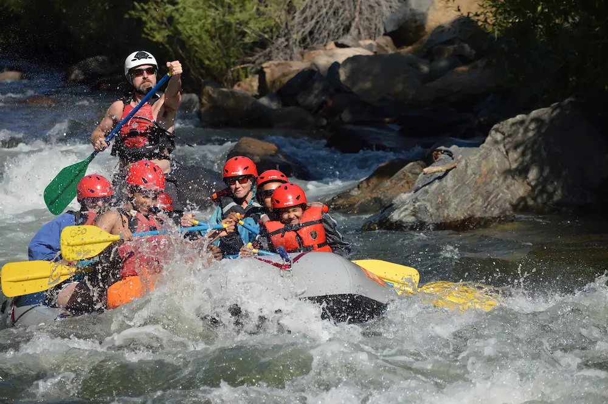
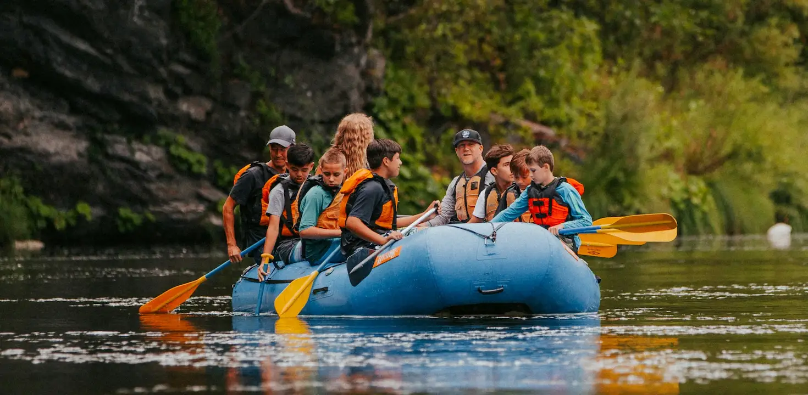
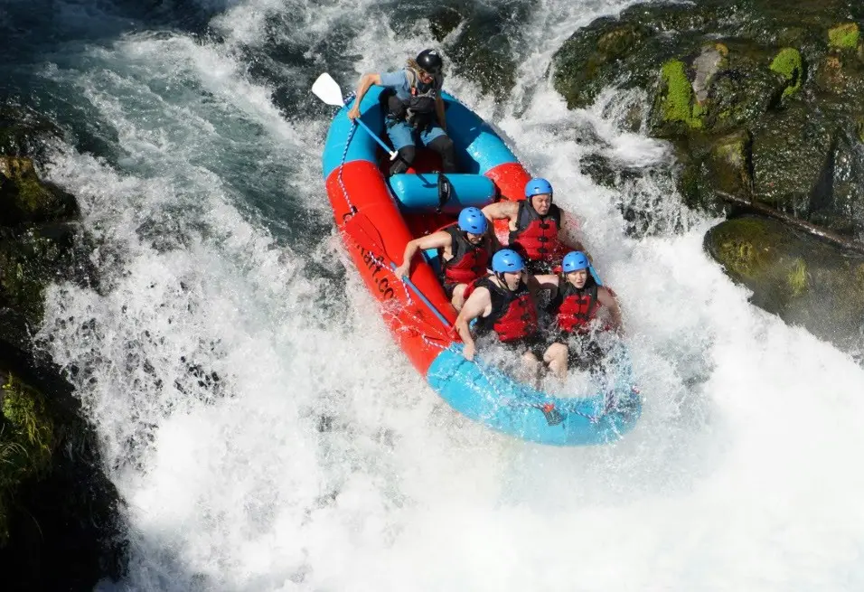
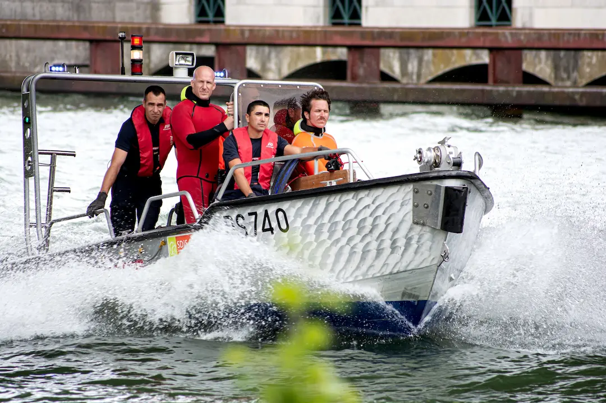
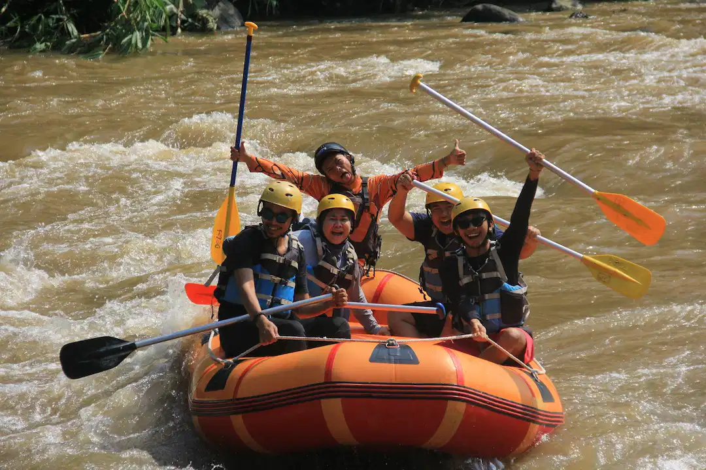

White Water Rafting

Join our certified guides for as unforgettable day on the river, from gentle family floats to thrilling Class IV rapids. Every trip includes top-of-the-line safety gear, expert instruction, and breathtaking views designed for both beginners and seasoned paddlers.
History
White Water Rafting was founded in 2010 by three local river guides who wanted to share the rapids they grew up paddling. Their first year included just two rafts and a few weekend getaways.

Today our team of certified guides leads trips for families, beginners, and experienced paddlers. Every guide completed swift-water rescue training before taking guests on the river.
Adventure Awaits You!



